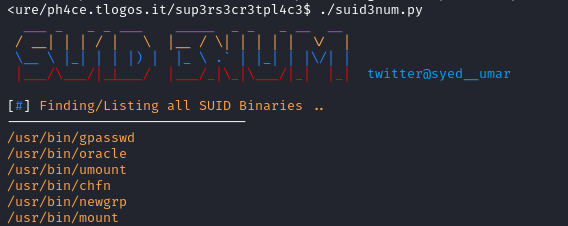

7. SUID/SGID Executables
To abuse of these executables we do not need to run them with sudo like in the chapter Sudo
• SUID files get executed with the privileges of the file owner(user).
• SGID files get executed with the privileges of the file group. If the file is owned by root, it gets executed with root privileges, and we may be able to use it to escalate privileges.
Shell Escape Sequences
Just as we were able to use shell escape sequences with programs running via sudo, we can do the same with SUID/SGID files.
A list of programs with their shell escape sequences can be found here: https://gtfobins.github.io/
No LD_PRELOAD & LD_LIBRARY_PATH for executables
We cannot use the same LD_PRELOAD and LD_LIBRARY_PATH environment variables tricks used in Sudo Privilege Escalation because they are disabled by default for SUID files executable, due the obvious security risk.
Manually locate files with the SUID or SGID bits set:
• SUID and SGID
target@debian:~$ find / -type f -a \( -perm -u+s -o -perm -g+s \) -exec ls -l {} \; 2> /dev/null #<--- BETTER
target@debian:~$ find / -perm -u+s -o -perm -g+s -type f 2>/dev/null #alternative

• Only SUID
target@debian:~$ find / -perm -u+s -type f 2>/dev/null
target@debian:~$ find / -perm -04000 -type f 2>/dev/null #alternative
• Only SGID
target@debian:~$ find / -perm -g+s -type f 2>/dev/null
Tools:
• https://github.com/Anon-Exploiter/SUID3NUM
differentiate from default binaries and more interesting files with SUID

Bibliography:
• TCM Security: Linux Privilege Escalation for Beginners (https://academy.tcm-sec.com/p/linux-privilege-escalation)
• Tib3rius: Linux Privilege Escalation for OSCP & Beyond! (https://www.udemy.com/course/linux-privilege-escalation/)